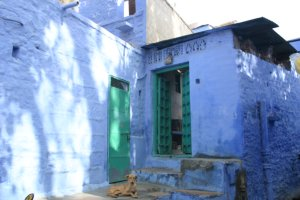
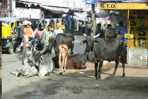
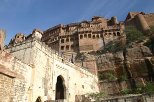
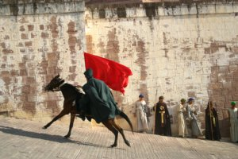

Le 10 décembre 2004,
 Apres une journee passee dans le bus "super deluxe" (les guillemets sont importants), nous arrivons a Jodhpur, la ville bleue. Elle doit son nom a ses facades qui sont traditionnellement peintes avec de l’indigo. Sous les conseils de nos amis anglaises de Jaisalmer, nous louons une chambre dans un vieil hotel de 600 ans, tenu par une famille entiere. Il surplombe la ville et on peut voir, depuis son toit, le fort de Jodpur, perche sur la colline qui fait front.
 Nous decidons de partir a pied pour visiter ce fort. La ville est constituee d’un dedale de ruelles qui serpentent en montant et en descendant. C’est l’endroit ideal pour mettre a l’epreuve notre legendaire sens de l’orientation. L’ambiance me fait penser aux vieilles villes mediterraneennes avec les vaches en plus, les facades bleues plutot que blanches et sans la mer. Bref ...
 Nous parvenons au debut de la route pavee qui monte au fort, sans trop de difficultes. A notre grand etonnement, il n’y a pas grand monde et nous commencons a grimper dans le plus grand calme, ce qui nous convient parfaitement. A chaque etape de notre ascension, le panorama sur la ville est plus impressionnant. A mi-parcours, nous tombons sur un jardin accueillant, niche derriere les remparts. Toujours a la recherche de passages derobes, je decouvre une porte sous une arcade qui debouche au beau milieu du fort. Nous sommes alors interpelles par Gerard et sa compagne Thailandaise Don, que nous avions rencontres dans le train pour Bikaner, et recroises dans le bus pour Jaisalmer. Ils nous expliquent alors que l’entree du fort est censee etre payante ! Ils nous ventent la qualite de l’audiophone fourni avec le billet. Nous decidons donc de redescendre (au grand dam d’Eve-Laure folle de joie de faire une deuxieme montee) pour en profiter. Nous nous separons alors de nos compagnons de route qui nous laissent leur adresse et nous invite a venir passer quelques jours chez eux en Thailande. Pourquoi pas !
Comme promis, l’audioguide (en francais, s’il vous plait !) est tres bien realise. Nous apprenons que le maharaja actuel a perdu tous ses pouvoirs, democratie oblige, et vit actuellement dans un palais termine juste apres l’independance de 47 par son pere. Il a par consequent ouver au public le fort, ancienne residence des maharajas, en faisant un des musees les plus prestigieux d’Inde. Beaucoup d’efforts y sont faits en termes de restauration. Il s’agit en effet, du plus beau fort que nous ayons visite pour l’instant. L’audioguide nous donne, de plus, de nombreux details sur la vie des rajpoutes (sortes de paladins locaux au code d’honneur tres strict et tres portes sur la guerre), des maharajas et de leur epouses, et sur le regne des Moghols en general.
 En quittant le fort, nous sommes surpris par une bande de cavaliers vetus de noir de la tete aux pieds, qui deboulent sur nous au galop. Un gardien des lieux nous fait signe de nous ecarter. Il s’agit, en fait, du tournage d’un film (americain selon les rumeurs) dont une des scenes se deroule dans l’entree du fort. Nous restons donc la quelques minutes et assistons, pour notre plus grand plaisir, a plusieurs prises de vues. Les costumes des figurants sont tres realistes : on s’y croirait !
Nous continuons notre journee culturelle par la visite du Jaswant Thada, magnifique memorial de marbre blanc, construit en l’honneur d’un maharaja disparu, sur une colline qui surplombe la ville.
Apres cette journee chargee, nous retournons, non sans quelques detours involontaires, a notre hotel pour profiter du coucher de soleil sur le fort, depuis le toit.
Michaël
{kind=link}
{kind=link}
{kind=link}
{kind=link}
{kind=link}